Heute
Dateien einzeln öffnen, mit Strg+F durch hundert Seiten suchen, Passagen kopieren, Quellen später mühsam wiederfinden. Wissen bleibt in Ordnern gefangen.
Mit Neural Nautic
Zusammenfassung mit Fundstellen, präzise Rückfragen ans Dokument, Angebots- oder Vertragsbausteine direkt extrahiert — alles aus einem kontrollierten Ablauf in Ihrer EU-Umgebung.
Was steckt drin
Pipeline
OCR über Tesseract oder Azure Document Intelligence (für Scans und
Mischdokumente) · semantisches Chunking nach Absatz- und
Abschnittsgrenzen · Embedding-Erzeugung mit europäisch gehosteten
Modellen (numerische Repräsentation eines Textes) · Speicherung
in einer pgvector-Datenbank (Supabase,
EU Frankfurt) · Anfragen werden über Top-k-Retrieval mit Reranking
beantwortet.
Belegbarkeit
Jede Aussage trägt einen Verweis auf Dokument, Seite und Originalpassage. Keine Antwort ohne Quelle. Lückenhafte Belegketten werden offen ausgewiesen — die Antwort sagt dann: „Hier reicht der Beleg nicht."